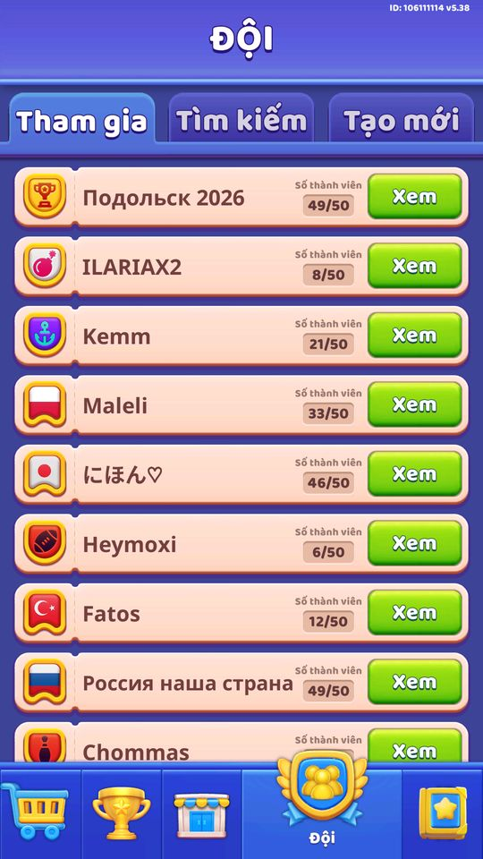
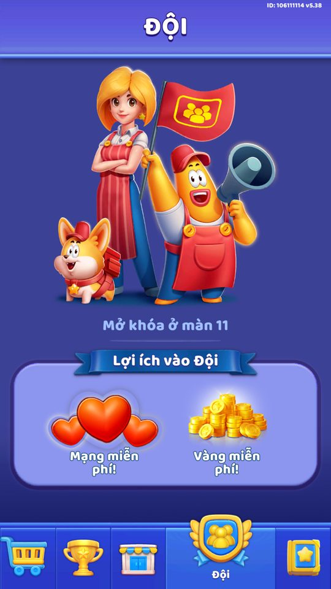

Ảnh chụp màn hình
Lập đội tối đa 50 người để xin tim, chat và chơi sự kiện cùng nhau.
Mô tả
- Trong code tên nội bộ là "clan"; giao diện hiển thị là Team (Đội).
- Người chơi tạo hoặc gia nhập một đội tối đa 50 thành viên.
- Chức năng cốt lõi: xin tim, tặng tim (tối đa 5/lần), chat phân trang, và tham gia sự kiện theo đội.
- Toàn bộ dữ liệu đội do server quản lý qua kết nối UDP, client chỉ gửi yêu cầu và nhận callback.
Thiết kế chi tiết
Tóm tắt thiết kế
Playtest Tab Đội: Tham gia / Tìm kiếm / Tạo mới; danh sách đội 6–49/50 thành viên. Mất mạng thì báo “Mất kết nối, đang cố gắng kết nối lại”.
Code Mở màn 11, tạo đội 100 vàng, tặng tim tối đa 5 mỗi yêu cầu, dữ liệu qua socket UDP; là nền cho Scoop Squad, Delivery Battle, Team Treasure.
Luồng người chơi từng bước
- Danh sách độiNgười chơi PlaytestTham gia đội.

Danh sách đội

Bảng tổng hợp mọi tính năng đã làm chi tiết: GoodsSort_ThietKeChiTiet.xlsx.
Còn thiếu / chưa xác minh
Mở khóa & điểm vào
TeamController.IsUnlock() trả về true khi LevelDataController.Level >= level_unlock. Hằng số level_unlock = 11 (mở ở màn 11).
Điểm vào:
- Tab Team ở màn Home
- Popup gợi ý vào đội sau khi mở khóa
- Tin nhắn xin tim / lời mời sự kiện trong chat đội
Cách hoạt động
- CheckTeamState() hỏi server trạng thái đội mỗi khi mở tab hoặc đổi scene.
- CreateTeam() tốn get_gold_to_create_team() vàng (đọc RemoteConfig.goldToCreateTeam, mặc định 100).
- GetRandomTeam()/SearchTeamByName() để tìm đội; RequestJoinTeam() để xin vào; chủ đội ResponJoinRequest() để duyệt.
- CanRequestHeart()/DonateHeart() lo phần xin và tặng tim; MAX_DONATE_PER_REQUEST=5.
- GetTeamChat(page)/SendChat() cho chat; OnSpamChatFromServer() chặn spam; tin mời sự kiện cho phép RequestJoinStarCollab()/RequestJoinCarnivalRoulette().
Luồng chi tiết theo code
Khi vào tab Team, CheckTeamState() hỏi server trạng thái đội hiện tại; nếu chưa có đội thì GetRandomTeam() trả về danh sách gợi ý và SearchTeamByName(name) cho phép tìm theo tên. Người chơi CreateTeam(avatarId, name, des, open, levelRequire) (tốn get_gold_to_create_team() vàng, mặc định 100 từ RemoteConfig.goldToCreateTeam) hoặc RequestJoinTeam(teamCode). Chủ đội nhận yêu cầu và ResponJoinRequest(messageId, accept). Trong đội: GetTeamChat(page) tải chat phân trang, SendChat(type, content) gửi tin (OnSpamChatFromServer chặn spam), CanRequestHeart()/GetTimeSpanRequestHeart() quản lý cooldown xin tim, DonateHeart(messageId) tặng tim (tối đa MAX_DONATE_PER_REQUEST=5 mỗi yêu cầu). Có thể EditTeamInfo(...), RemoveMember(code) (chủ đội), LeaveTeam(). Các sự kiện theo đội được phát qua tin nhắn: CanJoinEventByMessage(), RequestJoinStarCollab(messageId), RequestJoinCarnivalRoulette(messageId). Dữ liệu TeamData/TeamInfo được Save() mã hóa theo khóa "clan" gắn với AccountManager.Code.
Ảnh chụp màn hình (1)
1 ảnh chụp trong game (BlueStacks/LDPlayer, tài khoản cấp 4). Bấm ảnh để phóng to; nhãn UC dẫn tới use case tương ứng.


Phần thưởng
Phần thưởng theo code
| Ngữ cảnh | Phần thưởng | Evidence |
|---|---|---|
| Tặng/xin tim | 1 tim miễn phí mỗi lần nhận donate | TeamController.DonateHeart |
| Sự kiện theo đội (Team Treasure, Delivery Battle) | Giá trị do server (các *Sheet: TeamTreasureRewardSheet DeliveryBattleRewardSheet nạp qua get-config) | TeamTreasureDataController; DeliveryBattleRewardSheet |
Số liệu chính
| Chỉ số | Giá trị | Nguồn |
|---|---|---|
| ||
| ||
| ||
|
Use case (8)
Bấm vào từng use case để mở. Mở/đóng tất cả
UC-01 Tạo đội mới
Các bước- CanCreateTeam() kiểm tra điều kiện và số vàng
- get_gold_to_create_team() đọc RemoteConfig.goldToCreateTeam (mặc định 100)
- CreateTeam(avatarId, name, des, open, levelRequire) gửi lệnh create_team qua UDP
- OnCreateTeamFromServer(status) nhận kết quả
| Actor | Player |
|---|---|
| Trigger | Bấm Create ở tab Team |
| Điều kiện | Đã mở khóa (màn 11) và đủ vàng |
| Kết quả | Đội được tạo trên server, người tạo trở thành owner (owner_code) |
| Quy tắc / số liệu | Tốn 100 vàng mặc định (goldToCreateTeam, server có thể đổi); đặt avatar_id, tên, mô tả, chế độ mở/đóng (open) và màn yêu cầu (required_levels) |
| Evidence | TeamController.CanCreateTeam; TeamController.CreateTeam; TeamController.get_gold_to_create_team; RemoteConfig.goldToCreateTeam |
UC-02 Tìm và xin vào đội
Các bước- GetRandomTeam() lấy danh sách TeamInfoSimple gợi ý
- SearchTeamByName(teamName) gửi lệnh search_team tìm theo tên
- RequestJoinTeam(teamCode) gửi yêu cầu gia nhập
- RequestJoinTeamFromServer(status) trả kết quả
| Actor | Player |
|---|---|
| Trigger | Bấm Search hoặc xem đội gợi ý |
| Điều kiện | Chưa thuộc đội nào |
| Kết quả | Yêu cầu gia nhập được gửi tới chủ đội (hoặc vào thẳng nếu đội open) |
| Quy tắc / số liệu | Đội có cờ open (mở/đóng) và required_levels (màn tối thiểu); max_member tối đa MAX_MEMBER_PER_TEAM=50 |
| Evidence | TeamController.GetRandomTeam; TeamController.SearchTeamByName; TeamController.RequestJoinTeam; TeamController.MAX_MEMBER_PER_TEAM |
UC-03 Chủ đội duyệt yêu cầu gia nhập
Các bước- Tin nhắn yêu cầu hiện trong get_totalMessage()
- ResponJoinRequest(messageId, accept) chấp nhận/từ chối
- ResponJoinRequestFromServer(status, messageTeam, teamInfo) cập nhật đội
| Actor | Player |
|---|---|
| Trigger | Nhận tin nhắn yêu cầu trong chat đội |
| Điều kiện | Là owner hoặc có role quản lý |
| Kết quả | Thành viên được thêm vào member_infos hoặc bị từ chối |
| Quy tắc / số liệu | TeamMemberInfo lưu role, helps_made, helps_received, country_code, golden |
| Evidence | TeamController.ResponJoinRequest; TeamController.ResponJoinRequestFromServer; TeamMemberInfo |
UC-04 Xin tim và tặng tim cho đồng đội
Các bước- CanRequestHeart() kiểm tra cooldown qua nextRequestHeart
- GetTimeSpanRequestHeart() cho biết thời gian còn lại
- Gửi tin xin tim; đồng đội thấy và DonateHeart(messageId)
- DonateHearFromServer(status, messageTeam) cập nhật trạng thái tặng
| Actor | Player | Team member |
|---|---|
| Trigger | Hết mạng hoặc thấy tin xin tim |
| Điều kiện | Trong một đội |
| Kết quả | Người xin nhận tim miễn phí; người tặng tăng helps_made |
| Quy tắc / số liệu | Mỗi yêu cầu tặng tối đa MAX_DONATE_PER_REQUEST=5; xin tim có cooldown (nextRequestHeart, GetNumRequestHeart) |
| Evidence | TeamController.CanRequestHeart; TeamController.DonateHeart; TeamController.MAX_DONATE_PER_REQUEST; TeamController.GetTimeSpanRequestHeart |
UC-05 Chat đội phân trang
Các bước- GetTeamChat(page) tải tin theo trang (totalPage, messageByPage)
- SendChat(type, content) gửi tin
- ValidateMessage(messages) lọc tin hợp lệ
- OnSpamChatFromServer() chặn khi spam
| Actor | Player |
|---|---|
| Trigger | Mở khung chat đội |
| Điều kiện | Trong một đội |
| Kết quả | Tin hiển thị trong get_totalMessage(); chống spam phía server |
| Quy tắc / số liệu | Tin được phân trang (curPage/totalPage); có loại tin đặc biệt như Merry Christmas |
| Evidence | TeamController.GetTeamChat; TeamController.SendChat; TeamController.OnSpamChatFromServer; TeamController.ValidateMessage |
UC-06 Rời đội hoặc bị loại
Các bước- LeaveTeam() gửi lệnh rời đội
- RemoveMember(code) (chủ đội) loại một thành viên
- RemoveMemberFromServer(status, teamInfo) cập nhật
- ClearCache() xóa dữ liệu đội cục bộ
| Actor | Player | Team owner |
|---|---|
| Trigger | Bấm Leave hoặc chủ đội loại thành viên |
| Điều kiện | Trong một đội |
| Kết quả | Người chơi rời đội, dữ liệu cục bộ được reset về mặc định |
| Quy tắc / số liệu | SetDataToDefault() đặt lại TeamData; onRemoveMember callback |
| Evidence | TeamController.LeaveTeam; TeamController.RemoveMember; TeamController.ClearCache; TeamController.SetDataToDefault |
UC-07 Tham gia sự kiện theo đội qua tin nhắn
Các bước- IsJoinAnyEvent() / CanJoinEventByMessage(messageTeam) kiểm tra
- RequestJoinStarCollab(messageId) hoặc RequestJoinCarnivalRoulette(messageId)
- JoinStarCollabFromServer / JoinCarnivalRouletteFromServer cập nhật
| Actor | Player |
|---|---|
| Trigger | Thấy lời mời sự kiện trong chat đội |
| Điều kiện | Sự kiện đội đang chạy |
| Kết quả | Người chơi tham gia Star Collab / Festival Parade cùng đội |
| Quy tắc / số liệu | Mỗi tin mời có hạn (_messageIDJoinEventExprice); kết nối cần GameController.CanSendMessage |
| Evidence | TeamController.CanJoinEventByMessage; TeamController.RequestJoinStarCollab; TeamController.RequestJoinCarnivalRoulette; TeamController.IsJoinAnyEvent |
UC-08 Hướng dẫn (tutorial) Team lần đầu
Các bước- IsShowTut() kiểm tra trạng thái tutorial
- Hiển thị hướng dẫn
- ShowTutDone() đánh dấu đã xem và Save()
| Actor | System |
|---|---|
| Trigger | Lần đầu mở tab Team sau khi mở khóa |
| Điều kiện | TeamData.tutState chưa hoàn thành |
| Kết quả | Tutorial chỉ hiện một lần |
| Quy tắc / số liệu | Trạng thái lưu trong TeamData.tutState theo khóa "clan" |
| Evidence | TeamController.IsShowTut; TeamController.ShowTutDone; TeamData.tutState |
Cấu hình (7)
Gộp mọi nguồn: const trong code, JSON mặc định trong Resources, bảng static, storage key, AB test, cờ server.
| Nguồn | Key | Kiểu | Giá trị | Ý nghĩa | Nơi định nghĩa |
|---|---|---|---|---|---|
| code const | level_unlock | int | 11 | Màn mở khóa tính năng Team | TeamController (const) |
| code const | MAX_MEMBER_PER_TEAM | int | 50 | Số thành viên tối đa mỗi đội | TeamController (const) |
| code const | MAX_DONATE_PER_REQUEST | int | 5 | Số tim tặng tối đa mỗi yêu cầu | TeamController (const) |
| storage key | key | string | clan | Khóa lưu dữ liệu đội (mã hóa theo AccountManager.Code) | TeamController (const) |
| config class | goldToCreateTeam | int | 100 (mặc định client) | Vàng cần để tạo đội; đọc qua RemoteConfigController.get_Config, server có thể đổi | RemoteConfig.goldToCreateTeam / remoteconfig_defaults.tsv |
| config class | TeamInfo | class | code, owner_code, avatar_id, name, description, num_member, max_member, score, weekly_helps, required_levels, member_infos[], open, requested, team_class, nextRequestHeart, activityLevel | Cấu trúc thông tin đội do server gửi | Falcon.PuzzleCore.Team.TeamInfo |
| config class | TeamMemberInfo | class | userInfo, role, helps_made, helps_received, country_code, golden | Thông tin từng thành viên | Falcon.PuzzleCore.Team.TeamMemberInfo |
Backend / server
| Command | Chiều | Mục đích |
|---|---|---|
create_team | client→server | tạo đội mới (tốn vàng) |
search_team | client→server | tìm đội theo tên |
donate_heart | client→server | tặng tim cho đồng đội |
*FromServer callbacks | server→client | OnCheckTeamStateFromServer, OnGetRandomTeamFromServer, GetTeamInfoFromServer, DonateHearFromServer... cập nhật trạng thái đội |
Giao diện (UI)
| Element | Class | Mục đích |
|---|---|---|
| Tab Team / danh sách đội | TeamController | tạo, tìm, quản lý đội |
| Khung chat đội | TeamController | chat, xin/tặng tim, lời mời sự kiện |
Storage keys
clan
Chưa đọc được / ghi chú
- Nội dung/giá trị thưởng sự kiện theo đội do server (các *Sheet nạp qua ClientClassConverter), không baked trong client.
- Cooldown xin tim cụ thể (nextRequestHeart) do server đặt, không có hằng số trong client.
- Không spoof được level cao trên máy nên tab Team đầy đủ (màn 11+) chỉ mô tả từ code, không chụp live.
Tính năng liên quan
Bảng xếp hạng (Leaderboard) Hồ sơ người chơi (Profile) Mạng / Tim (Lives) Cuộc đua Giao hàng (Delivery Battle) Lễ hội Diễu hành TeamTreasure, StarCollaboration
Nguồn đã đọc
- features/TeamController.md
- features/TeamBattlesDataController.md
- features/TeamTreasureDataController.md
- PseudoC/Assembly-CSharp/TeamController.c
- facts/config/remoteconfig_defaults.tsv
- facts/loc/terms.json